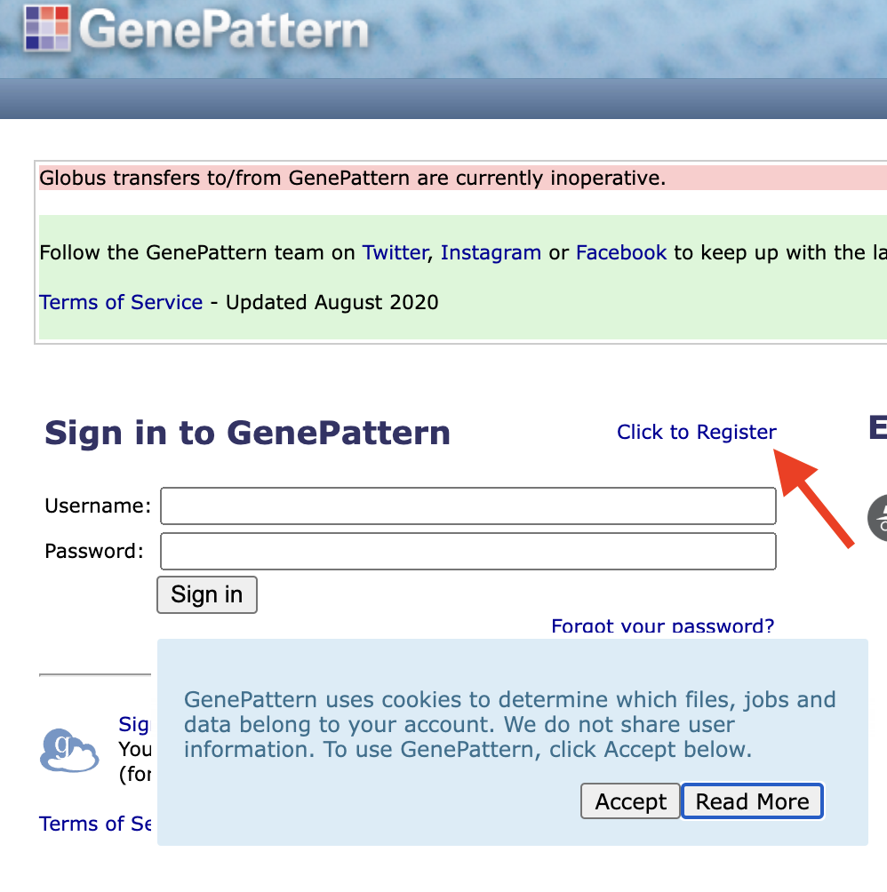

ITN University of Michigan 2025 Workshops
University of Michigan ITN Workshops
Welcome to the ITN University of Michigan Workshop Series!
Over the next two days we will cover the a variety of bioinformatics topics. Please feel free to refer to these materials in the future.
Wifi: {FILLIN}
Website: bit.ly/{FILLIN}
Schedule
| Day 1 (FILL IN Room) - April 8: | Time |
|---|---|
| Introduction to Reproducibility | 9:30 AM - 11:00 AM |
| Intermediate and Advanced Reproducibility | 11:30 AM - 1:00 PM |
 Free
Lunch! Free
Lunch! |
1:00 PM - 2:00 PM |
| Analyzing Clinical Data | 2:00 PM - 3:30 PM |
| Day 2 (FILL IN ROOM) - April 9: | Time |
|---|---|
| Choosing Genomics Tools | 9:30 AM -11:00 AM |
| Tools for Spatial Transcriptomics | 11:30AM - 1:00 PM |
| Free
Lunch! |
1:00 PM - 2:00 PM |
| Introduction to UM Resources | 2:00 PM - 3:00 PM |
Pre-requisites
This information was emailed to you, but you will need to register for the following resources based on the workshops you will be attending:
| Day 1 Workshops | GitHub | GitHub Desktop | Docker Desktop | PositCloud |
|---|---|---|---|---|
| Introduction to Reproducibility | ||||
| Intermediate and Advanced Reproducibility | ||||
| Analyzing Clinical Data |
| Day 2 Workshops | GenePattern | spatialGE |
|---|---|---|
| Choosing Genomics Tools | ||
| Tools for Spatial Transcriptomics |
If you do not have a GitHub account or a preferred git client, please create your own GitHub account and install GitHub Desktop: - Create a GitHub account using the “Sign up” button in the top right. - Download GitHub Desktop
Install Docker and Docker Desktop if you don’t already have it installed by following these instructions (If you absolutely cannot install Docker you can try to install Podman as an alternative)
To create a Posit Cloud account, go to the Posit Cloud website and sign up with any of the shown methods.
To create a GenePattern account, go to the GenePattern website and click the “Click to Register” link above the login prompt.

To create a spatialGE account, go to spatialGE Website and click on “Sign Up” in the upper right corner.